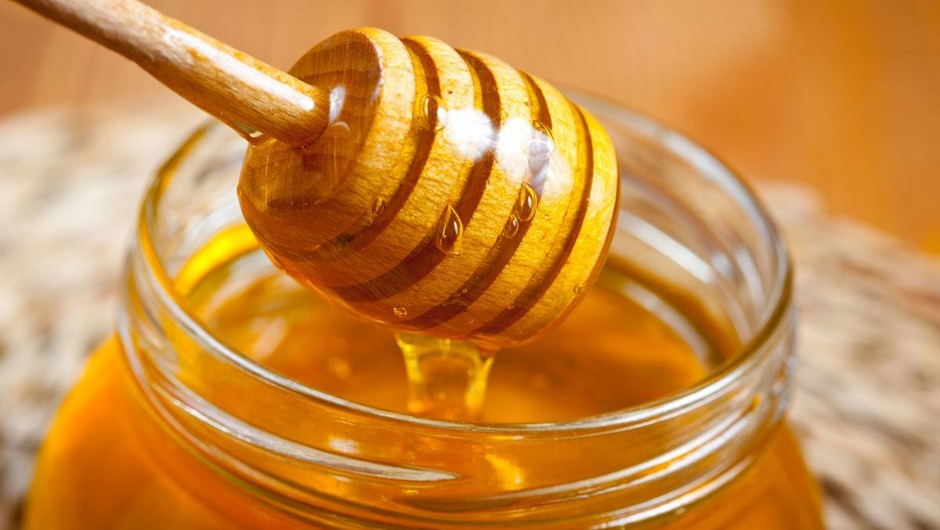
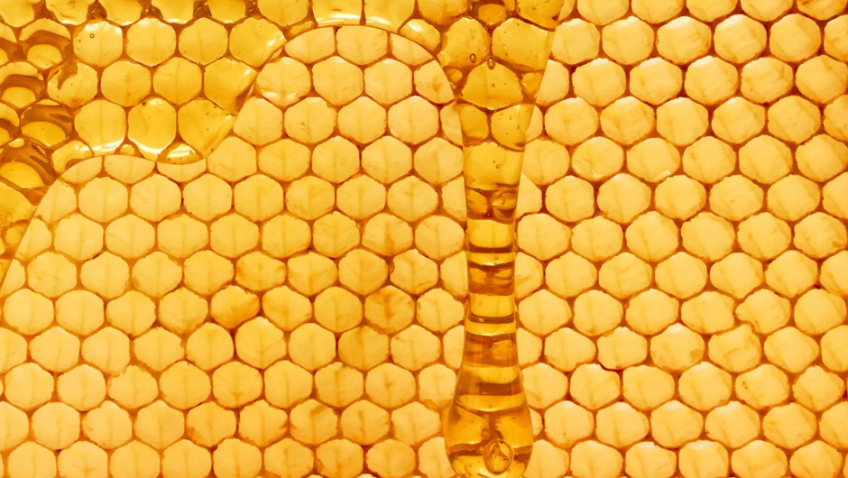

З листя липи можна робити чудовий чай, із суцвіть – лікувальний відвар. Але також із жовтих кольорів липи ми отримуємо по-справжньому цілющий мед. Він має приємний аромат, дуже солодкий на смак і набагато світліший за гречаний мед.
Гречаний мед виходить із нектару гречки. Йому властиві темний колір та своєрідний міцний терпкий смак. До складу цього меду, як і інших, входять три основні компоненти: фруктоза, глюкоза та вода. Саме тому багато хто став заміняти цукор медом.
Акацієвий мед можна назвати рекордсменом за кількістю благотворних властивостей серед усіх медових представників. Його спектр позитивного на організм небувало широкий. Акацієвий мед можна використовувати для лікування безлічі хвороб: респіраторні захворювання, головний біль, хвороба нирок, а також він допоможе позбутися безсоння.
Гірський мед вважається дійсно цінним і несе безліч користі для нашого організму. Все тому, що в горах повітря свіже і чисте, рослини не піддаються шкідливому впливу ні з боку автомобілів, ні з боку фабрик, навіть звичайний бруд і пил на них не потрапляють. Отримуваний мед складається з понад 40 видів трав та лікарських рослин.
Щодо користі меду, то є клінічно доведені факти його лікувальної дії. «Американські лікарі клінічно довели, що під час кашлю, а особливо сухого та нічного, чайна ложка меду на ніч або чай з чайною ложкою меду можуть допомогти полегшити стан хворого. Але в такому випадку варто уважно поставитися до правильного вибору меду: він має бути справжнім, а не цукровою підробкою», – наголошує Тетяна Миненко.
Зокрема, дієтолог Тетяна Миненко зазначає, що з точки зору дієтології, мед – це, по суті, той самий цукор. «Заміна цукру медом для людей, що, наприклад, худнуть, не допоможе їм позбавитися зайвих кілограмів», – говорить Тетяна. У високоякісних сортах меду близько 75% простих цукрів. Глюкози, як правило, менше (35%) ніж фруктози (40%). Їх співвідношення дуже впливає на фізичні властивості меду. Зі збільшенням кількості глюкози підвищується здатність до кристалізації, а від фруктози він солодший на смак.